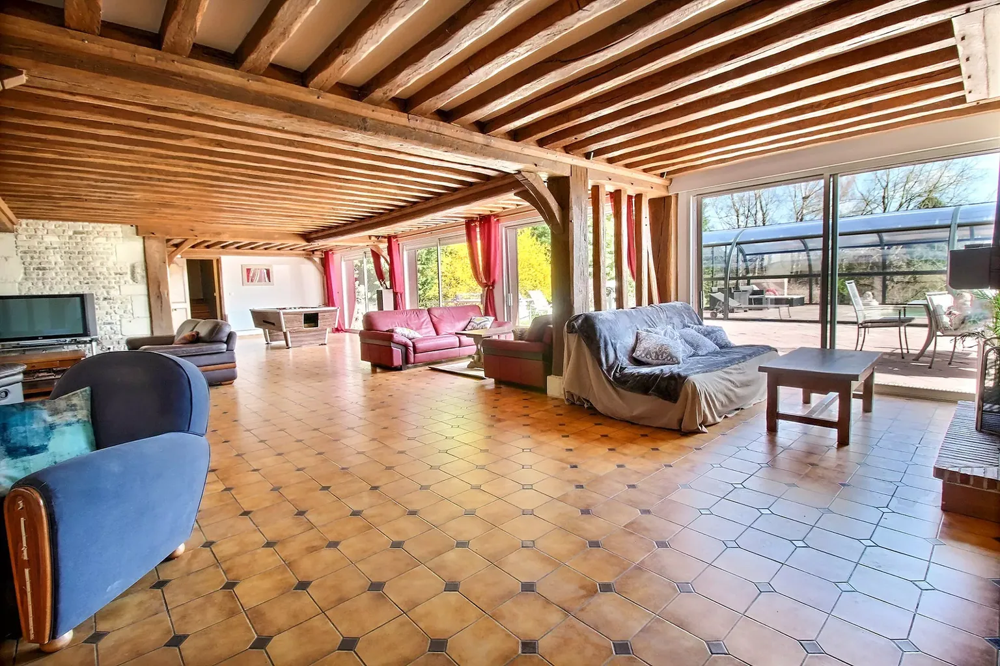
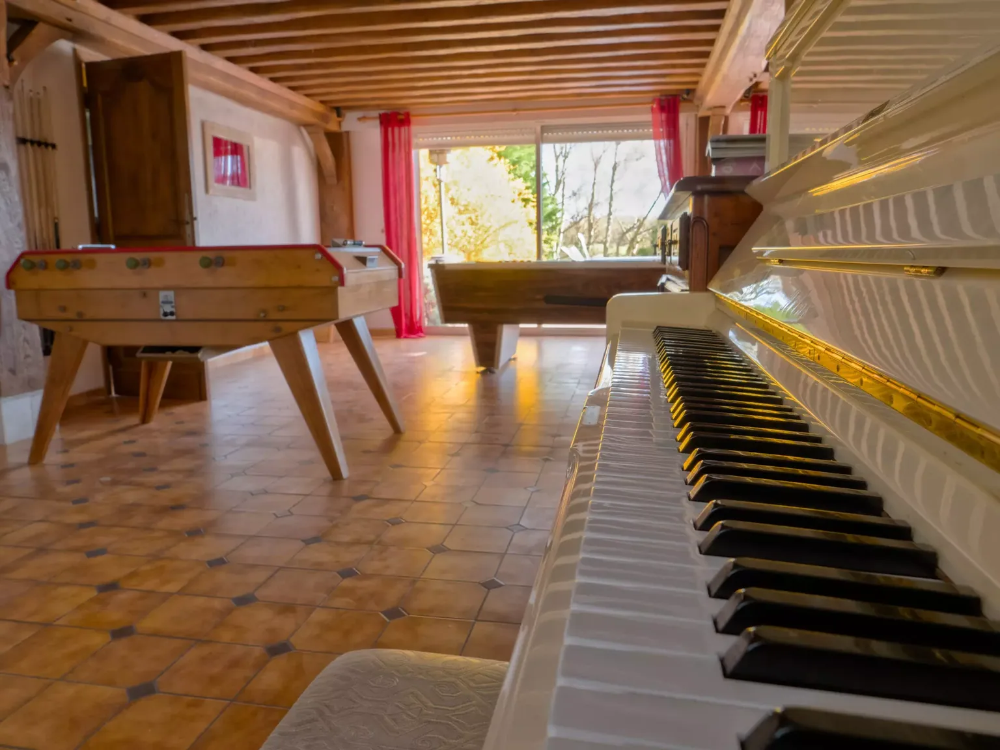
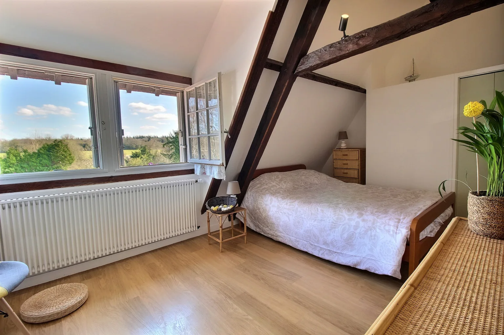
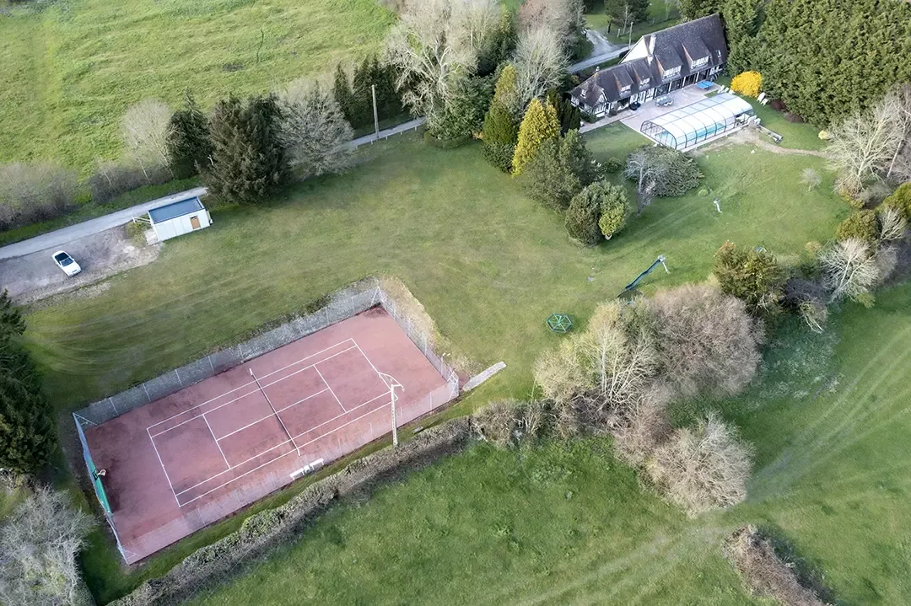
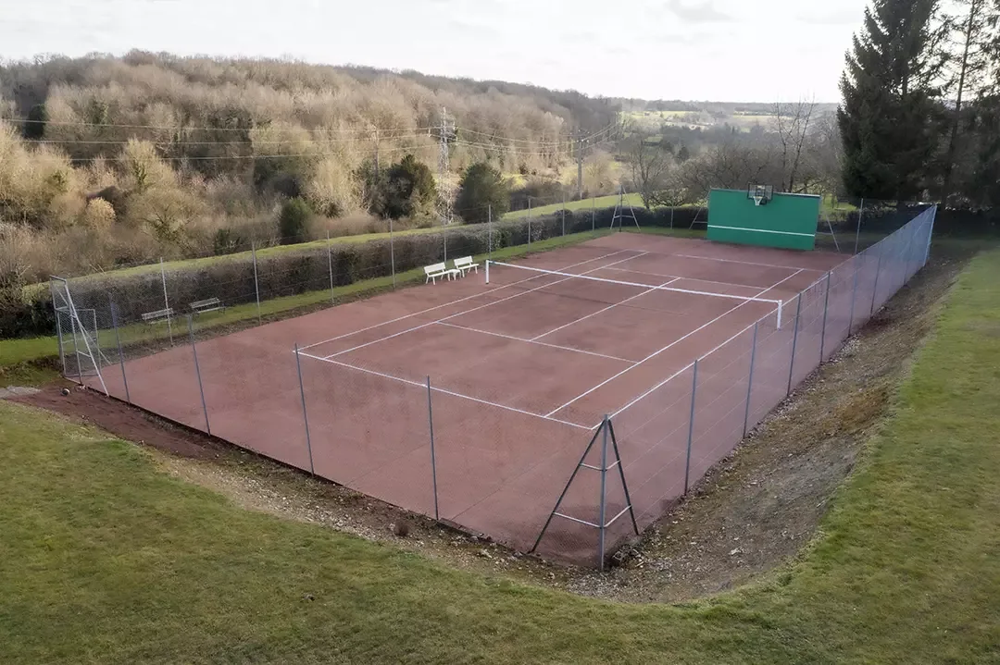
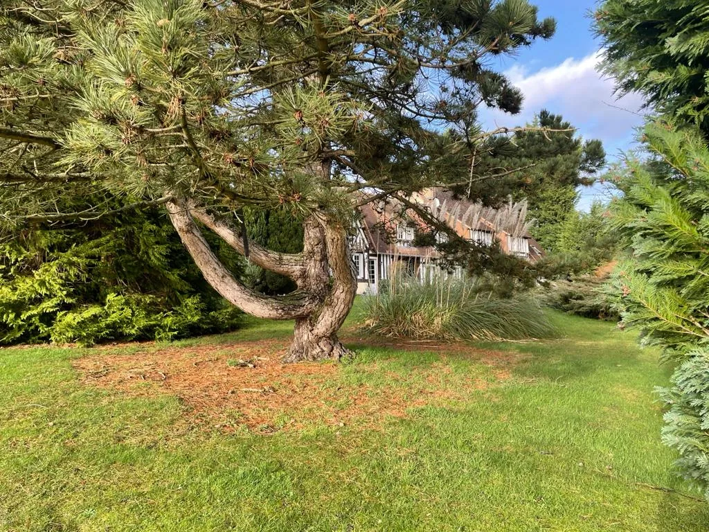
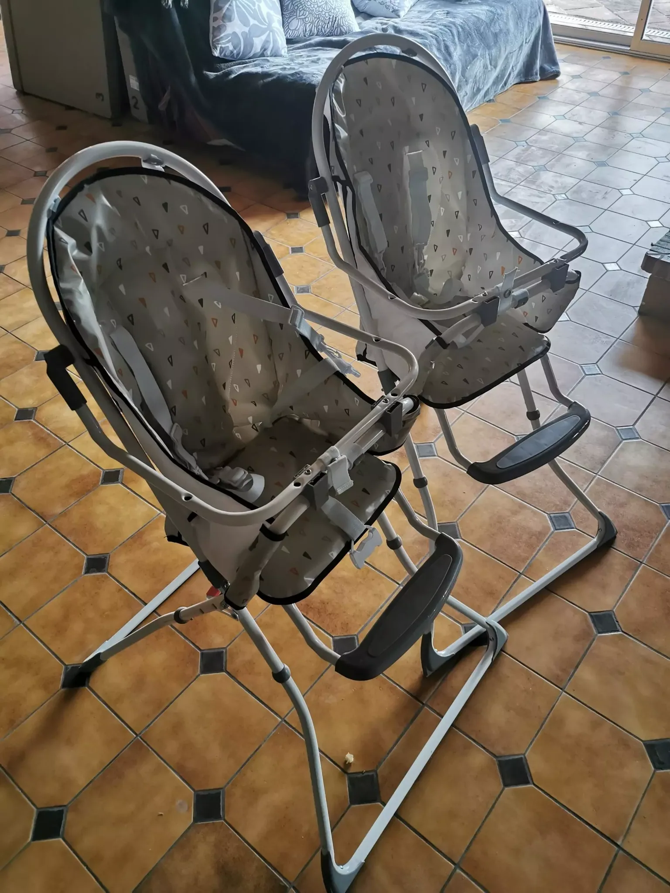
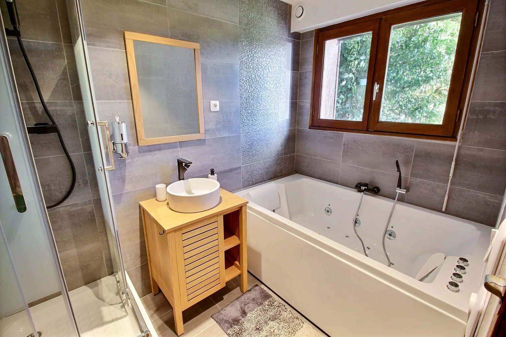
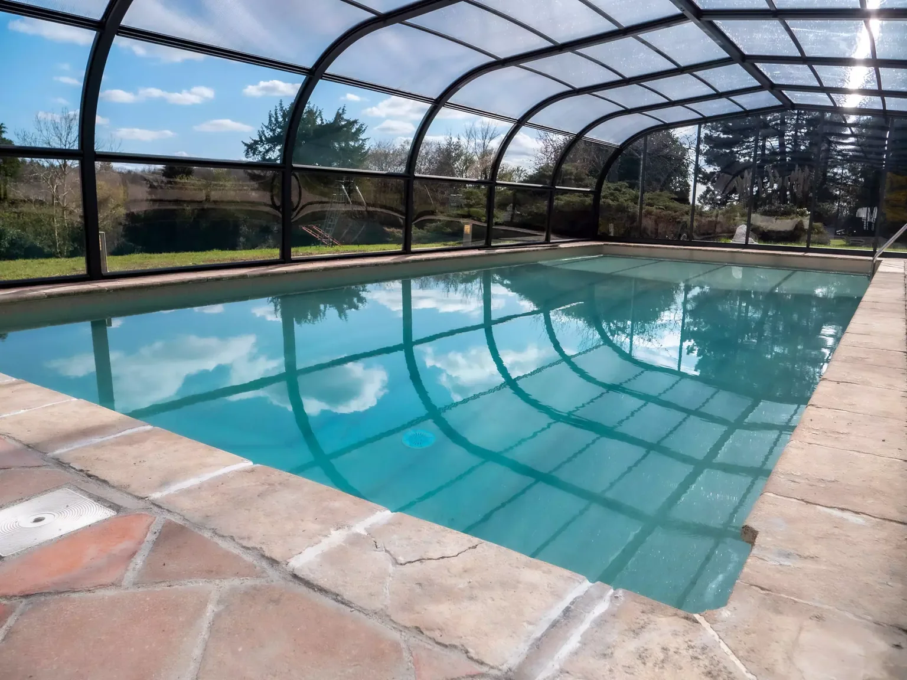

Une maison entière,
rien que pour vous.
Huit chambres, de grands espaces à partager et le calme du Pays d’Auge. Jusqu’à 15 invités.

Luxueuse propriété au cœur du Pays d’Auge, à 1h45 de Paris et à 20 min de Honfleur et de Deauville.
Nous avons pensé notre maison pour vous ! Confortable et luxueuse comme un hôtel, équipée comme un club de vacances. La tranquillité et l’exclusivité en prime.
Le Domaine aux Lions se trouve au cœur d’un hameau isolé, au bout d’une impasse, entouré de quelques maisons et bordé de champs.
Notre grande et charmante maison rénovée comporte 8 chambres, 5 salles de bains, un jacuzzi intérieur, un immense salon avec cheminée, billard, baby-foot, piano…
À l’extérieur, profitez d’une piscine couverte, sécurisée et chauffée toute l’année à 28°C (température pouvant varier en cas de grand froid), d’une terrasse avec BBQ et table de ping-pong, ainsi que d’un court de tennis.
WiFi et internet par fibre.
15invités maximum
8chambres & annexes
5salles de bains
6 000 m²de jardin

Une maison où l’art
a sa place.
Les chambres portent les noms de peintres de la région. Reproductions des peintres normands et créations contemporaines accompagnent votre séjour, au fil des pièces.
Voir les chambresLa maison, dans le détail.
Tous les espaces, les équipements et les services du domaine.
La Maison au rez-de-jardin
- 1 Cuisine équipée avec tout l’électroménager et les accessoires pour votre confort : 3 types de cafetières, capsules de café et condiments fournis, frigo américain avec fontaine d’eau intégrée, four, four micro-ondes, lave-vaisselle, bouilloire, grille-pain, vaisselle et accessoires à foison
- 2 espaces salle à manger avec 4 grandes tables
- 3 espaces salon : 9 canapés et fauteuils, TV, DVD, Karaoké, Netflix, Tv Orange, chaine HiFi, console de jeux vintage
- 1 espace d’activités avec billard, baby-foot, piano, fléchettes, jeux de société et bibliothèque
- 1 double cheminée traversante au coeur de cette immense pièce de 150m² (d’octobre à avril, le bois vous sera fourni)
- 1 chambre accessible de plein pied
- 1 salle d’eau avec WC (shampooing et gel douche à disposition)
- 1 WC séparé
- 1 piece Spa Jacuzzi intérieur avec douche
La Maison à l'étage
- 7 chambres
- 3 salles de bain avec WC (shampooing et gel douche à disposition)
- 1 WC separé

Voici les détails de nos chambres, toutes aux noms de peintres de la région
- 4 chambres avec 1 lit double
- 3 chambres avec 2 lits simples
- 1 chambre avec 1 lit simple
L’art est à l’honneur au Domaine aux Lions: vous découvrirez des nombreuses reproductions des peintres normands, ainsi que les créations originales contemporaines.
La Terrasse
- 1 piscine 12 x 5 m, couverte, sécurisée et chauffée à 28°C toute l’année (température pouvant varier en cas de grand froid), avec barrières et portes normatives, utilisable de 8h00 à 20h00.
1 piscine 12 x 5 m, couverte, sécurisée et chauffée à 28°C toute l’année (température pouvant varier en cas de grand froid), avec barrières et portes normatives, utilisable de 8h00 à 20h00.
- 1 table de tennis de table avec raquettes et balles à disposition
1 table de tennis de table avec raquettes et balles à disposition
- 1 braséro Ofyr au bois
1 braséro Ofyr au bois
- salons de jardin

Le Tennis
- Raquettes adulte et enfant, balles à disposition
- Mur de tennis avec panneau de basket

La Buanderie
- lave-linge
- sèche linge
- équipements et produits de ménage
Le Jardin de 6000m² clos, boisé et sécurisé
- terrain de pétanque avec boules à disposition
- trampoline de 5m de long
- parcours Ninja Warrior enfant
- toboggan géant
- vraie tyrolienne de 15m
- doubles bascules
- tourniquet
- abri de jardin avec ballons, molky, badminton et autres jeux mis à disposition

Équipements pour les tout petits
- Lits bébé sur demande, commode avec une table à langer
- 2 chaises hautes, 2 transats
- vaisselle bébé, livres et jouets

Tout est possible au Domaine
Un parking privatif pour 8 voitures vous attend 50 mètres avant l’entrée.
Les lits seront faits, les serviettes de piscine et de toilette mises à disposition. Le ménage sera réalisé après votre départ. Seule la cuisine et la vaisselle devront être nettoyées et les poubelles triées sorties à l’arrière de la maison dans les bacs (nous nous occuperons de les déposer dans les containers publics)
De nombreux services complémentaires peuvent vous être proposés: baby-sitting, activités pour enfants et adultes, traiteur, massages…
Deux demandes de notre part pour tous ces plaisirs:
- Pour la tranquillite du voisinage, pas de fete, pas de musique a l’exterieur. Pas de bruit apres 23h
- Caution de 1500€ demandee
- Location de 2 nuits minimum hors vacances scolaires; 5 nuits minimum pendant les vacances.
- Nombreuses possibilites EN SEMAINE aux tarifs doux, pour vos seminaires, retraites, ou vacances decalees tout simplement. N’hesitez pas a nous contacter.
Au plaisir de vous accueillir prochainement et d’apercevoir vos sourires en fin de séjour!
Les Lions nombreux vous attendent


Prenez vos repères dans la maison et le jardin.
Explorer les espaces en 360°Réserver le domaine.
Choisissez vos dates. Nous vous aidons à préparer la suite.